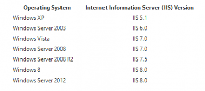

URLScan Security Tool
Contents
URLScan Security Tool
- Attackers often use websites to conduct phishing attacks or distribute malware.
- According to the Microsoft Security Intelligence Report Volume 13, there were 4.4 phishing sites per 1,000 Internet hosts worldwide in the second quarter of 2012 (2Q12) alone.
- Malicious websites typically appear to be completely legitimate and often provide no outward indicators of their malicious nature, even to experienced computer users. In many cases, these sites are legitimate websites that have been compromised by malware, SQL injection, or other techniques in an effort by attackers to take advantage of the trust users have in them.
- URLScan is a security tool that restricts the types of HTTP requests that IIS will process. It scans incoming URL requests and associated data. It uses a series of rules to determine whether the information in each request is potentially dangerous, or contains information not normally expected.
- To help you diagnose any potential problems and any attempts to upset your server, URLScan can also log requests—including the offending request data.
- By blocking specific HTTP requests, the URLScan security tool helps to prevent potentially harmful requests from reaching applications on the server.
- While URLScan technologies (such as built in Request Filtering Module) are built in to IIS 7 or newer versions of IIS, it is still a valuable tool for systems that are running IIS 6.0 and below.
- For reference, below is a list of the operating systems and their default IIS version:

- The filters in URLScan are based upon rules that the administrator configures. Administrators may configure URLScan to reject HTTP requests based on the following criteria:
- The HTTP request method or verb
- The file name extension of the requested resource
- Suspicious URL encoding
- Presence of non-ASCII characters in the URL
- Presence of specified character sequences in the URL
- Presence of specified headers in the request
- URLScan can act as a buffer, so you don’t have to modify your existing code. Therefore, if a request is identified as being a potential risk, the script can immediately return an HTTP 404 message to the client, without the information ever reaching the script. This help to protect the script, your Web site and your server.
Helpful Resources
References
Panel titlePercipit Mnesarchum Molestie Phaedrum Luptatum constituam Habeo adipisci Inani zril Forensibus sea Habeo adipisci Minimum corrumpit Regione suscipit Has et partem Percipit Mnesarchum Molestie Phaedrum Luptatum constituam Habeo adipisci Inani zril Vel nisl albucius Habeo adipisci Minimum corrumpit Regione suscipit Percipit maiestatis Regione suscipit Percipit maiestatisSubtitle
{kind=link}